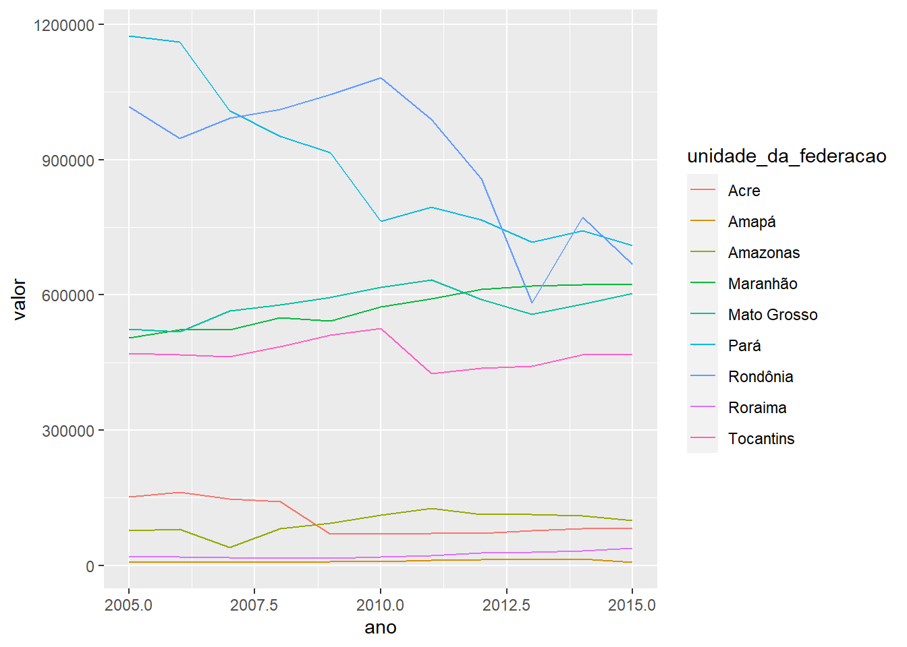

Pecuária e Desmatamento na Amazônia
Introdução
Diversos estudos nos últimos anos tem buscado investigar causas diretas e indiretas do desmataemtno na Amazônia. Alguns artigos evidenciam a forte correlação do desmatamento com a produção de soja e pecuária, por exemplo (Rivero et al. 2009). Este relatório busca explorar de forma simples alguns desses dados (desmatamento e produção agropecuária) utilizando o R.
Datazoom Amazônia
O datazoom.amazonia é um pacote do R que busca facilitar o acesso a variadas bases de dados relacionadas à Amazônia brasileira. Ele contempla dados ambientais, sociais e econômicos, passando por temáticas variadas. Buscaremos utilizar aqui os dados relacionados a pecuária e desmatamento.
Pecuária nos estados da Amazônia brasileira
Referências
Rivero, Sérgio, Oriana Almeida, Saulo Ávila, and Wesley Oliveira. 2009. “Pecuária e Desmatamento: Uma Análise Das Principais Causas Diretas Do Desmatamento Na Amazônia.” Nova Economia 19 (1): 41–66. https://doi.org/10.1590/S0103-63512009000100003.